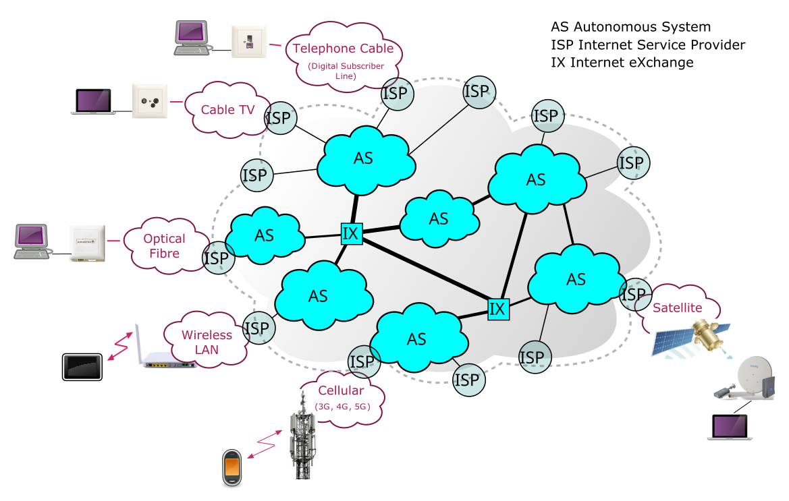

¿Qué son las tecnologías web?
Las tecnologías web permiten crear páginas y aplicaciones para un navegador. HTML organiza el contenido y CSS define su presentación. (W3C, s. f.)

Importancia para la sociedad y los negocios
La Web facilita el aprendizaje, los trámites y las compras. Sus beneficios dependen del acceso y de la facilidad de uso.
- Sociedad: oportunidades de aprendizaje, comunicación y acceso a servicios.
- Negocios: nuevos canales de venta y herramientas para coordinar el trabajo.
- Retos compartidos: brecha digital, accesibilidad, privacidad y seguridad.
Fuentes de consulta: UNESCO (2023) y OCDE (2021).
Recorrido del sitio
- Revisa el impacto en la sociedad.
- Compara aplicaciones en los negocios.
- Revisa el formulario de contacto.